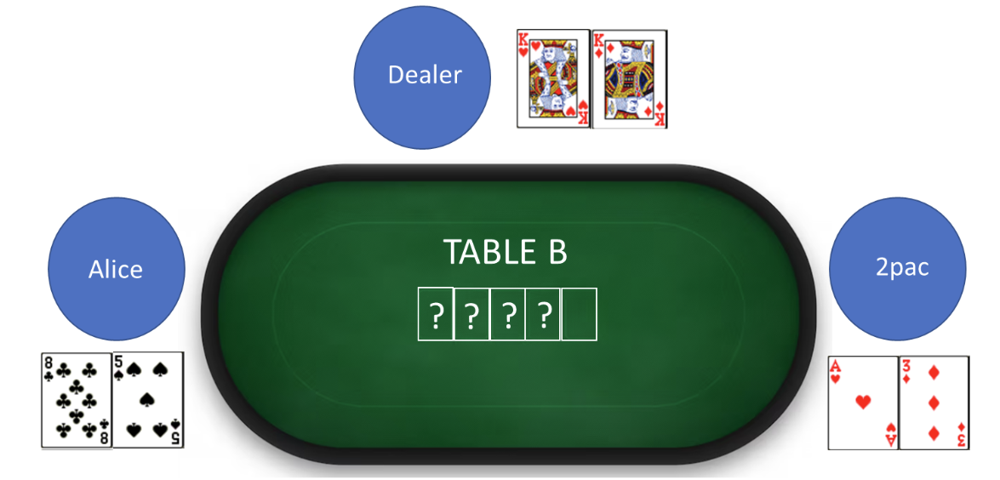
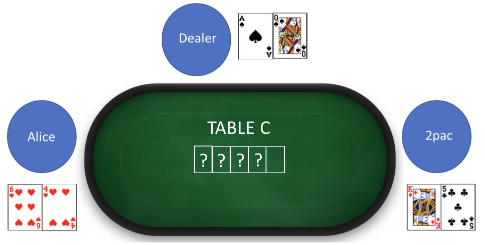
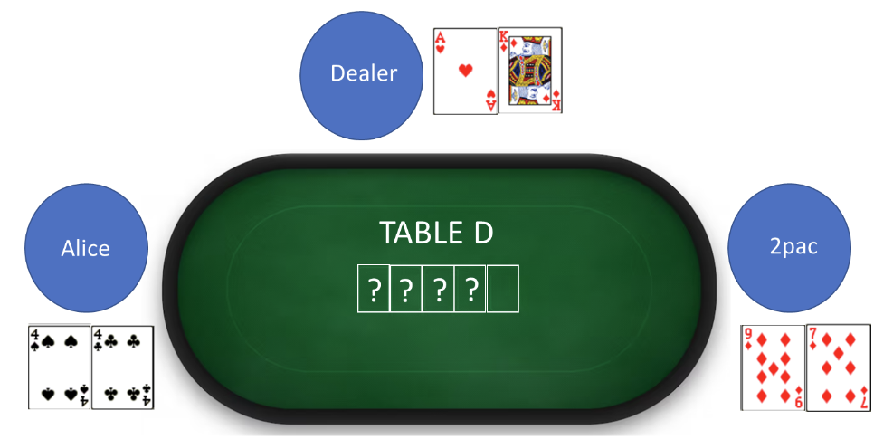
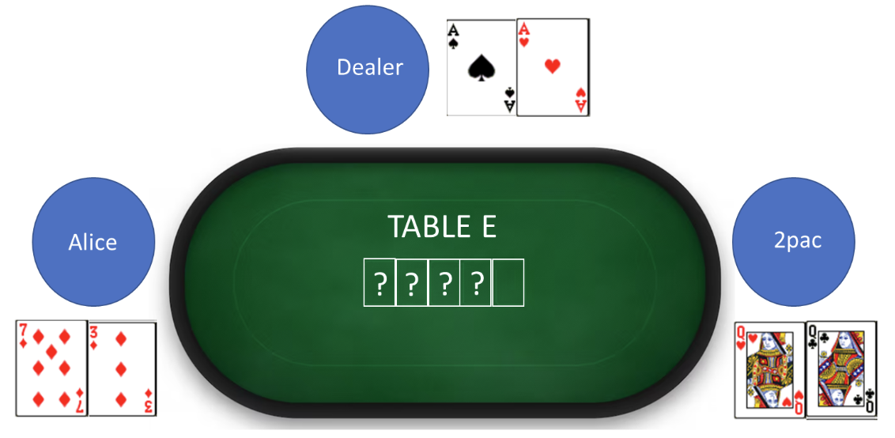
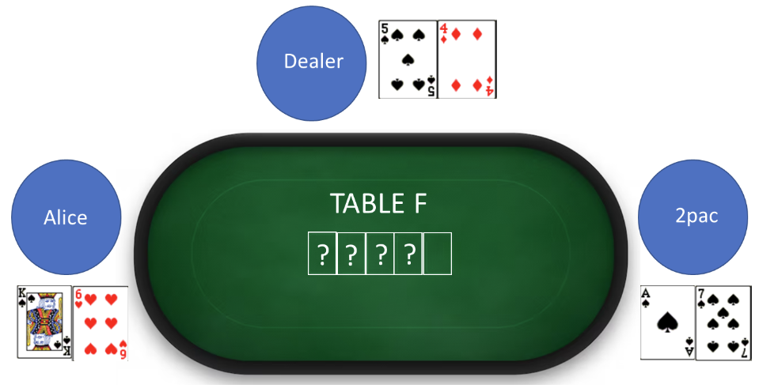

Fortius
Waldo spectates a game of hold’em. At the table, Alice sits on the left, 2pac sits on the right, each aiming to beat each other and the dealer. Unfortunately, the dealer has the strongest hand before the river… but can we count them out? What do the Olympians need to get stronger?





Hints
We are excited to play poker, but don't understand how to determine the 4 cards on the table?
The 4 question marks indicate the 4 community cards dealt before the river. There are 4 community cards already in play that you have to first figure out using your feeders. Think about the suits in a deck of playing cards and how they might relate to your answers.Note that (A)lice sits on the left, and (2)pac sits on the right. You will need this once you figure out the above (You do not need to google Alice/2pac or know who they are).
Lastly, for assignment of puzzle answers to tables, look to the first letters of your puzzle answers.